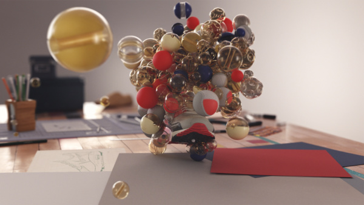
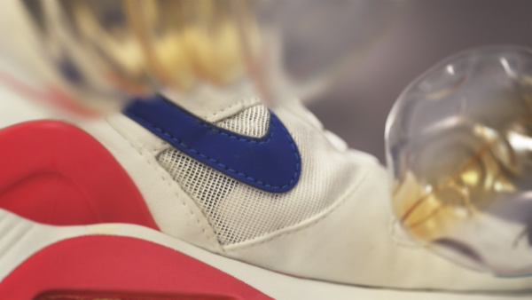

We worked closely with Nike Sportwear to design, direct and animate the campaign for the brand new Air Max Zero. Along side this we also crafted the brand language for Air Max Day — a global celebration of the iconic Air Max shoe. An intricate project with many different elements to bring together. From building and filming Tinker Hatfield’s design studio, to 3D scanning nine different Air Max shoes and refining the design of our Air Max day type which went on to be constructed and featured in stores globally.
|  |  |
Concept, Design & Direction:
ManvsMachine
3D Scanning:
FBFX